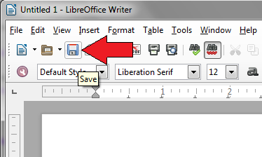
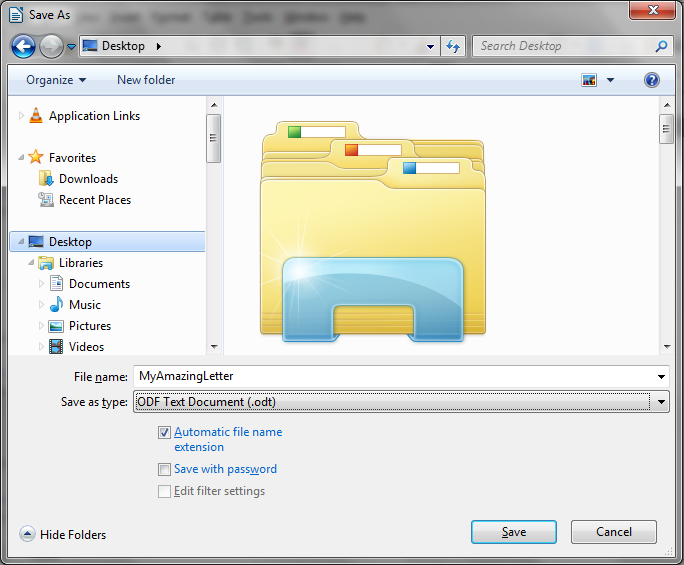

{{ page.title }}
A guide to writing a letter LibreOffice Writer.
Disclaimer
This guide is meant for users of Windows 7, other versions of Windows may not follow the exact process described.
Steps
- Open Libre Office using either the desktop icon or the Start menu.
- Click "Writer Document" under "Create" in the launch window. (Figure 1)
 Figure 1: Libre Office Launch Window
Figure 1: Libre Office Launch Window
- Type your letter as if it were MS Word.
- Once you've written an amazing letter, save it using the "Save" button. (Figure 2)

Figure 2: Writer "Save" Button
- Choose a good name and where you want to save it. (Figure 3)

Figure 3: Writer Save Window
- Choose a what file format you'd like save it as; Writer offers many options.(Figure 4)
Figure 4: Writer File Formats
- Click "Save" to finish saving your letter.
- Exit the program as you would any other.